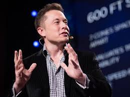

Bir şeyin mümkün olduğuna inandığınız zaman ihtimaller belirmeye başlar.
24 yaşında “okul mu kariyer mi” diye düşünerek doktorasını sonlandırıp kardeşiyle beraber Zip2 adlı ilk web yazılım şirketini kurdu. Şirketinin açılmasından itibaren Musk Kardeşler gece gündüz çalışarak 4 yıl boyunca kendilerini bu işe adayarak mücadele verdiler. Çalışmalarının meyvesini 1999 yılında Compaq şirketinin Zip2 şirketini 300 milyon dolara satın almasıyla gerçekleşti. Kazandığı paralar ile ilk önce X.com adında finansal hizmet şirketini kurdu. Daha sonra Musk Kardeşler dönemin rakip firması Confinity ile birleşerek güçlerini arttırdılar. Max Levchin’in ısrarı üstüne Elon Musk, yeni kuracağı ve büyük ümitler beslediği yeni girişiminin adını Paypal olarak koydu. Ürün isminin yanı sıra PayPal’ın Unix tabanlı altyapısının Microsoft tabanlı olacak şekilde değiştirilmesi de aradaki gerginliği artırdı. Bir gün Musk tatildeyken Levchin yönetim kuruluna baskı yaparak Elon Musk’ın CEO görevinden alınarak yerine Peter Thiel’in alınmasını sağladı. Musk artık CEO değildi ama hala yönetim kurulunda yer alan bir hissedardı. Elon Musk’ın günümüzdeki yaptığı yatırım ve projelerin önünü açan kapı ise 2002 yılında Ebay’in Paypal’ı satın alınmasıdır. Elon Musk Paypal’da %11.7’lik hisse sahibi olduğu için bu satıştan toplam 165 milyon dolar kazanmıştır.